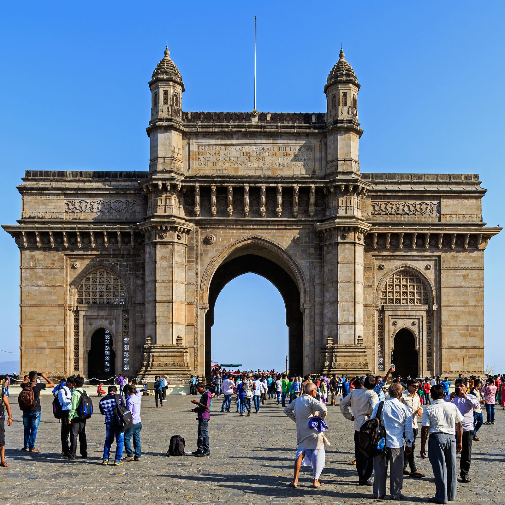
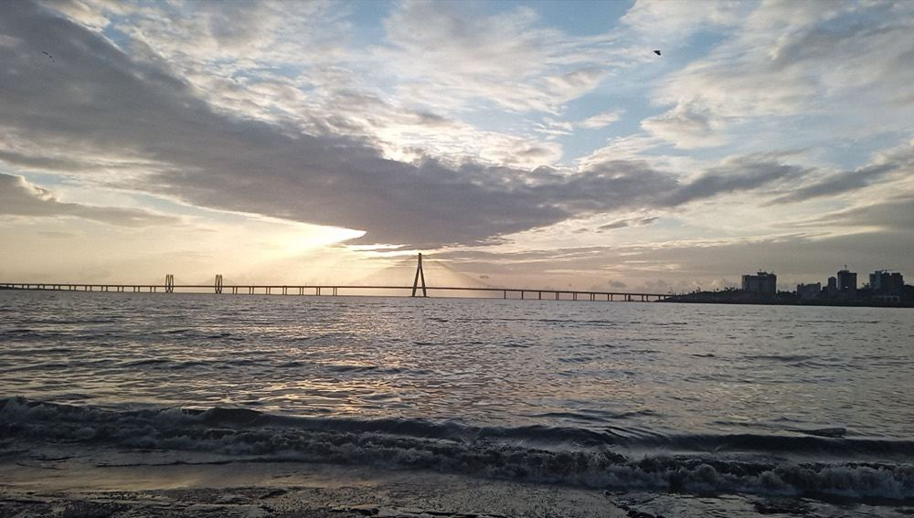
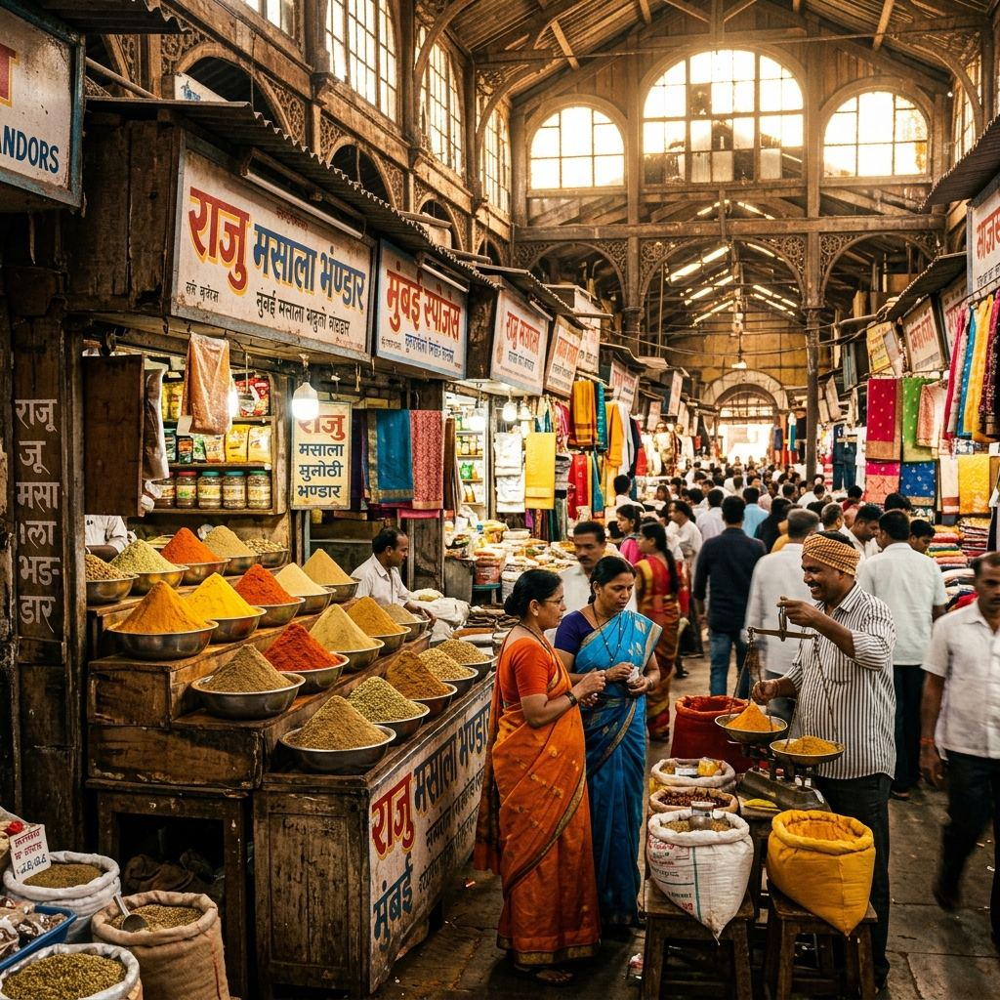
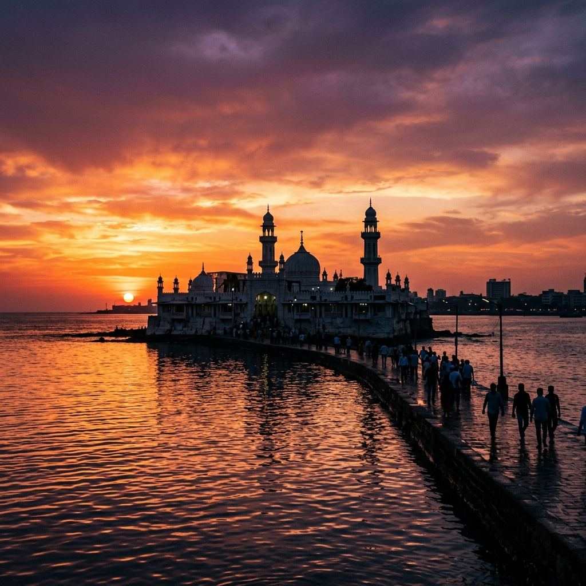
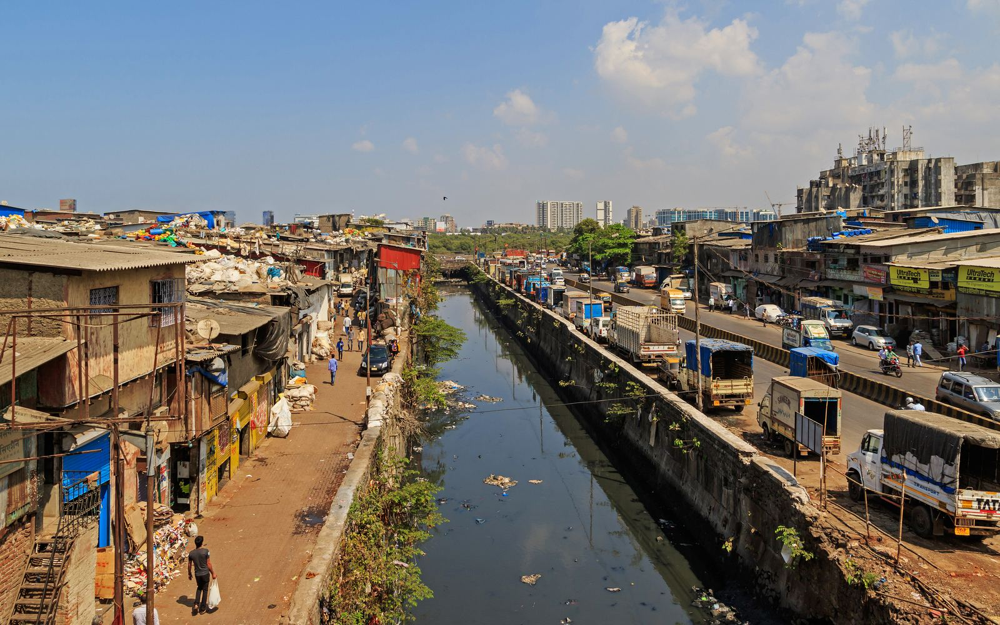

South Mumbai · WaterfrontField note liveGateway of India
Start with Mumbai's ceremonial waterfront, then let the harbour and Colaba turn one landmark into a proper walk.
Search by place, or browse by the kind of city you want: sea air, old stone, street food, neighbourhood life, or something closer to the airport.

South Mumbai · WaterfrontField note liveStart with Mumbai's ceremonial waterfront, then let the harbour and Colaba turn one landmark into a proper walk.
 South Mumbai · HeritageField note live
South Mumbai · HeritageField note liveA walkable pocket of Gothic façades, museums, galleries, cafés and shaded streets—the easiest place to slow Mumbai down.

Bandra · WaterfrontField note liveFort ruins, sea wind, the Sea Link on the horizon and a neighbourhood that feels younger and looser than South Mumbai.
 South Mumbai · WaterfrontField note live
South Mumbai · WaterfrontField note liveSit on the sea wall, watch the light change and let the city pass behind you. Simple, free and unmistakably Mumbai.

South Mumbai · MarketField note liveBrowse busy stalls, old shops and cafés after the Gateway. Best treated as a neighbourhood, not just a shopping street.
Fort · ArchitectureField note liveBegin with one of the world's great railway façades, then trace the old city through civic buildings, lanes and Irani cafés.

Mumbai Harbour · LongerField note liveA ferry-and-island excursion to rock-cut temples. This is a separate half-day commitment, not an extra stop on a rushed route.
Bundles of marigolds, fast-moving vendors and the city already fully awake. Worth the early start if local life matters more than monuments.

Mahalaxmi · Everyday MumbaiField note liveAn open-air working laundry seen best with context and respect. Pair the viewpoint with Mahalaxmi rather than treating people at work as a spectacle.
 Juhu · Closer to BOMField note live
Juhu · Closer to BOMField note liveA broad, busy beach with Mumbai street-food energy. More convenient than South Mumbai when your layover window is useful but not enormous.
Bandra · NeighbourhoodField note liveOld cottages, chapels, murals and independent cafés give Bandra a completely different rhythm from the postcard city.
 Powai · Closer to BOMField note live
Powai · Closer to BOMField note liveA calmer, modern-Mumbai option closer to the airport, useful when crossing the city would consume too much of your window.
Contemporary architecture, strong restaurants and cultural venues—a practical option when you want the city without a South Mumbai drive.
A breezy promenade and a close look at the Sea Link, easily paired with Dadar, Mahalaxmi or a drive toward Bandra.
Forest, trails and ancient Buddhist caves within the city. Best when you have a long daytime window and want nature over downtown.
Send your arrival, departure and interests. A Mumbai student suggests what fits, then adapts it around live traffic and your airport buffer.
Request a Detour →